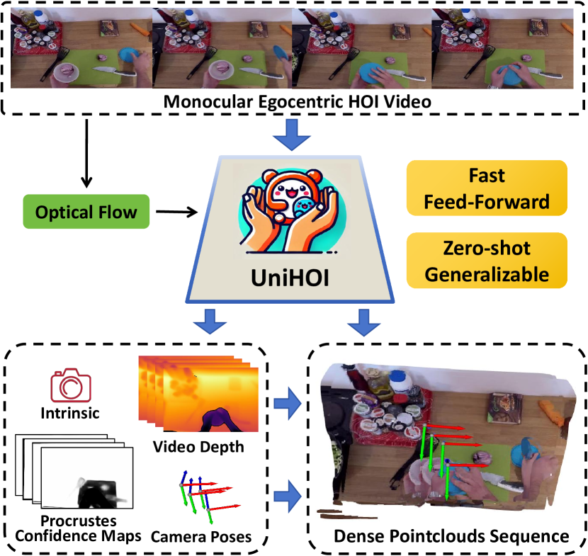

|
I am a first year M.S. student in ECE at UC San Diego. I also work with Prof.Yang Gao at Tsinghua University. Previously, I received my B.Eng. in Computer Science from Shanghai Jiao Tong University, advised by Prof. Yunbo Wang. I was also fortunate to do research at Stanford University, advised by Prof.Jiajun Wu. |

|
|
My long-term goal is to build embodied generalist agents that can acquire skills continually and adaptively and compose the learned skills to solve complicated long-horizon tasks. Towards this goal, I'm doing research at the intersection of computer vision, machine learning, and robotics. |

|
Geng Chen*, Wendong Zhang*, Han Lu, Siyu Gao, Yunbo Wang, Mingsheng Long, Xiaokang Yang CVPR, 2022 (Oral Presentation) Project Page / PDF / PyTorch Code |

|
Weiyu Liu*, Geng Chen*, Jiayuan Mao*, Joy Hsu, Jiajun Wu ICLR, 2024 Project Page / PDF |
|  |
Chengbo Yuan, Geng Chen, Li Yi, Yang Gao Under Review, 2024 |
|
Tsinghua University, Beijing, China Stanford University, CA, USA (remote) Shanghai Jiao Tong University, Shanghai, China |